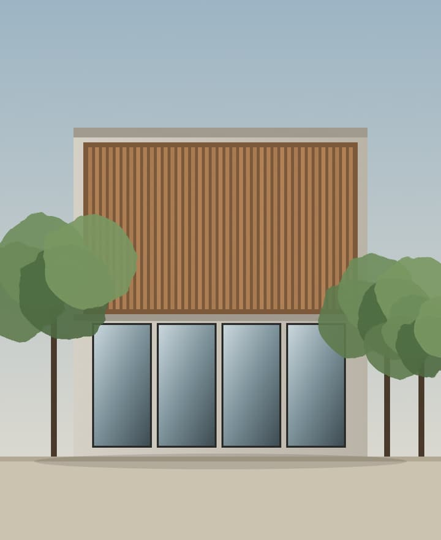
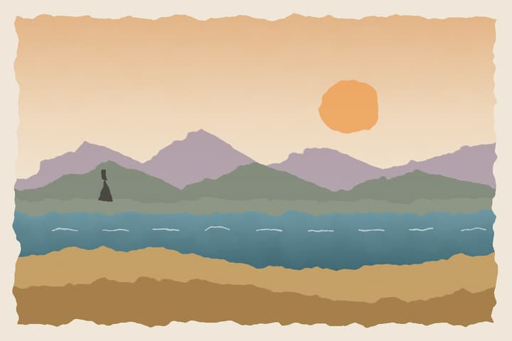
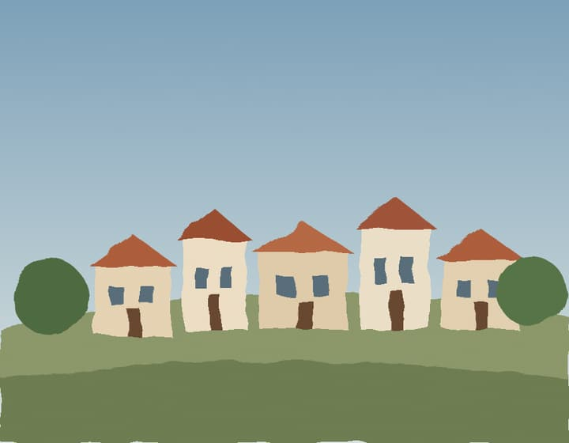

Plaquette d'agence · portrait, avec couverture
Une plaquette qu'on feuillette vraiment
Attrapez une page et tournez-la, cliquez sur son bord ou utilisez les flèches. Les annotations au crayon se tracent quand la page est lue.
Atelier Saulaie · architecture et paysage
Habiter le paysage
Plaquette 2027

L'atelier
Des maisons qui regardent dehors
Nous dessinons des maisons, des jardins et quelques équipements publics, toujours en partant du terrain : sa pente, ses arbres, la course du soleil.
Une même équipe suit le projet de la première visite à la remise des clés.
12personnes
140projets livrés
3prix régionaux
Maison des Saules · 2025 · 180 m²
Une façade qui filtre
Des lames de mélèze laissent passer la lumière du matin sans ouvrir la maison sur la rue.
Notre méthode
Quatre rendez-vous
- Visite du terrain, croquis sur place.
- Esquisse et estimation, sous trois semaines.
- Permis, consultation des entreprises.
- Chantier : une visite par semaine, un compte rendu le soir même.
Aucun honoraire n'est dû avant l'esquisse.

Le jardin des Lisières · 2026
Un jardin sur la dune
Des plantes qui tiennent au vent et au sel, des chemins de planches, un abri pour regarder la mer.
Ils nous ont confié leur projet
Ce qu'ils en disent
« On voulait de la lumière, on a eu bien plus : une maison qui change à chaque heure. »
« Un chantier tenu, des comptes rendus clairs, aucune mauvaise surprise. »
Prendre rendez-vous
Venez avec vos photos du terrain
Premier rendez-vous gratuit à l'atelier ou sur place.
atelier@saulaie.exemple
01 23 45 67 89
Visites de chantiers ouvertes le premier jeudi du mois.
Atelier Saulaie
Imprimé sur papier recyclé
Menu de restaurant · sans couverture
La carte s'ouvre sur la table
Sans couverture, le document s'ouvre directement sur sa première double page. Sur téléphone, une page à la fois.
Carnet de voyage · paysage, avec couverture
Un carnet à l'italienne
Format paysage : en double page sur un grand écran, une page à la fois ailleurs.
Carnet
Côte ouest
août
Jour 1
Arrivés par le train de 14 h. Le vent tombe vers 19 h, la lumière devient rose.
Jour 2
Le village en haut de la colline : volets bleus, toits rouges, un marché le jeudi.

À ne pas oublier
- Crème solaire
- Horaires des marées
- Carte des sentiers
- Carnet de croquis
Ce qu'on a mangé
Midi : des frites des moules au cidre.
Soir : galettes et cidre doux, au port.
à suivre